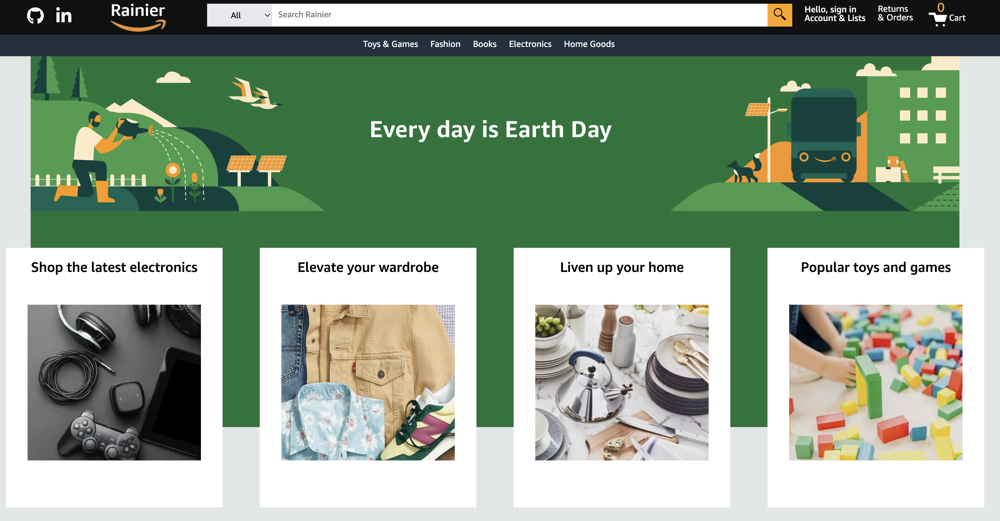

Rainier
 LiveRainier is a clone of the e-commerce website Amazon. Amazon is a website where users can browse and shop for anything they wish to purchase, as their product selection is plentiful across many product categories. On Amazon, users can create an account, search for the product they are interested, add products to their cart, and checkout those products. Products on Amazon are also filtered by their category. As a person who frequently uses Amazon, I thought it would be a great idea to try to create a clone of it.